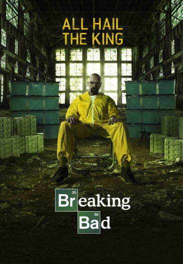

Breaking Bad
Rating: 4.8 
El profesor de química Walter White cree que su vida no puede ser peor. Su salario apenas le alcanza para sostener a su familia, una situación que no mejora cuando su esposa da a luz y su hijo adolescente sufre de parálisis cerebral, pero Walter queda anonadado cuando se entera que tiene un cáncer terminal. Al concluir que su enfermedad iba a arruinar financieramente a su familia, él toma una decisión desesperada con el fin de ganar más dinero durante el tiempo que le queda.
Año de estreno: 2008
Reparto: Brian Cranston, Aaron Paul, Anna Gunn, Dean Norris, RJ Mitte, Bob Odenkirk
Genero: Drama, Accion, Suspenso / Thriller
Temporadas: 5
+18